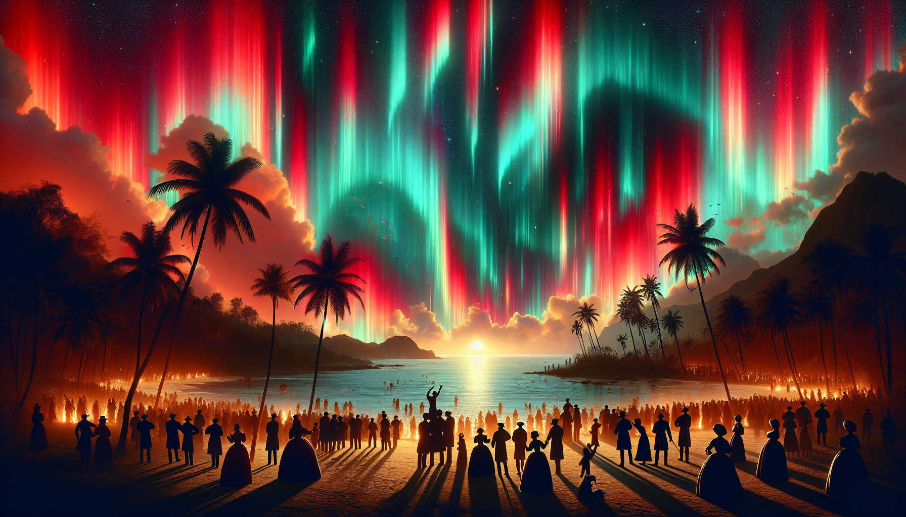
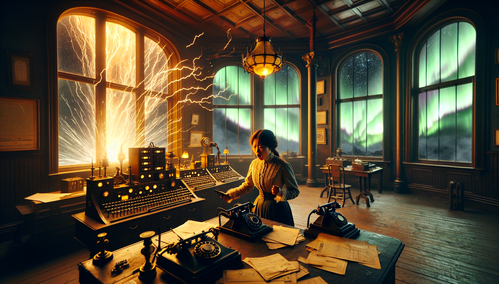

On September 1, 1859, English astronomer Richard Carrington witnessed something no human had ever seen before: a massive solar flare erupting from the Sun's surface. Within hours, Earth would experience a geomagnetic catastrophe that shocked telegraph operators, set papers on fire, and painted the night skies of the tropics with brilliant auroras. If it happened today, it could cost trillions.
(vs. typical 2-3 days)
Maximum Dst estimate
if repeated today
event in next 10 years
The Discovery
Just before noon on September 1, 1859, Richard Carrington was sketching sunspots at his private observatory in Redhill, Surrey when he witnessed what he described as "two patches of intensely bright and white light" erupting from a massive sunspot group. Independently, another British astronomer named Richard Hodgson was observing the same phenomenon from his Highgate observatory.
Carrington documented the event with precise timing: the flare appeared at 11:18 AM, moved over the course of five minutes, and disappeared. Neither man could have known that they had just recorded the first observations of a solar flare in history — or that a catastrophic coronal mass ejection (CME) was already racing toward Earth at unprecedented speed.
The Perfect Storm
The Carrington Event CME made the 93-million-mile journey from Sun to Earth in just 17.6 hours — roughly one-third the time of a typical CME. How was this possible? A smaller CME had erupted just days earlier, effectively "clearing the path" through the solar wind plasma that normally slows these solar storm clouds.
When the main CME hit Earth's magnetosphere on September 1-2, it triggered the most intense geomagnetic storm ever recorded. The Dst index (a measure of geomagnetic disturbance) has been estimated at anywhere from −800 to a staggering −1750 nT. For comparison, the 1989 Quebec blackout storm registered −600 nT.
Auroras in the Tropics

Artist's conception of auroras visible in tropical latitudes during the 1859 event
Normally confined to polar regions, the auroras from the Carrington Event were seen at shockingly low latitudes. In the northern hemisphere, the lights were visible from the Rocky Mountains to Mexico, Cuba, and even Colombia near the equator. In the southern hemisphere, auroras appeared as far north as Queensland, Australia and Hawaii.
The aurora was so bright over the Rocky Mountains that gold miners woke up and began preparing breakfast, thinking it was morning. In the northeastern United States, people could read newspapers by the light of the aurora alone.
The Victorian Internet Burns

Telegraph stations worldwide experienced failures, fires, and electric shocks
The telegraph network — the "Victorian Internet" — was the only high-tech infrastructure of its day, and it was devastated. Operators received severe electric shocks. Telegraph papers caught fire. Systems failed across Europe and North America.
Some telegraph operators found they could transmit messages even with batteries disconnected, using only the induced currents from the geomagnetic storm. Others reported that their equipment made sounds like "a chainsaw" or emitted streams of fire.
A series of sunspots begins forming on the Sun's surface. Auroras appear as far south as New England.
Auroras visible as far north as Queensland, Australia. A precursor CME clears a path through the solar wind.
Richard Carrington and Richard Hodgson independently observe the massive solar flare.
The CME strikes Earth. Telegraph systems fail worldwide. Auroras visible in the tropics.
The 2012 Near Miss
On July 23, 2012, Earth experienced a close shave just as perilous as the Carrington Event — but most newspapers didn't report it. A Carrington-class CME tore through Earth's orbital path, missing our planet by just nine days of solar rotation.
The storm cloud hit the STEREO-A spacecraft instead, giving scientists a treasure trove of data. Daniel Baker of the University of Colorado, who studied the event, put it bluntly: "If it had hit, we would still be picking up the pieces."
The July 2012 storm would have registered a Dst of approximately −1200 nT — comparable to the Carrington Event and twice as severe as the 1989 Quebec blackout.
⚠️ The Modern Risk
A 2013 study by Lloyd's of London and Atmospheric and Environmental Research estimated that a Carrington-level event today could cause $0.6 to $2.6 trillion in damage to the North American power industry alone. Global economic losses could reach $2.4 trillion over five years, with worst-case scenarios hitting $9.1 trillion.
Multi-ton transformers damaged by such a storm might take years to repair. Most people wouldn't even be able to flush their toilets, as urban water supplies rely on electric pumps. GPS systems would fail. Radio communications would be disrupted.
Physicist Pete Riley calculated the odds: there's a 12% chance of a Carrington-class event hitting Earth in the next decade.
The Connection Confirmed
The Carrington Event was pivotal in establishing the link between solar activity and geomagnetic storms. Scottish physicist Balfour Stewart observed a "magnetic crochet" (a sudden disturbance in the ionosphere) at the Kew Observatory magnetometer at the exact time of Carrington's flare observation. When the massive geomagnetic storm followed the next day, Carrington suspected a connection — though he cautioned that "one swallow does not make a summer."
American mathematician Elias Loomis compiled worldwide reports of the 1859 storm's effects, providing the comprehensive evidence that finally cemented the solar-terrestrial connection in scientific understanding.
Legacy and Lessons
The Carrington Event remains the benchmark for extreme space weather. Every major geomagnetic storm is compared to it. The event demonstrated that our Sun, while essential for life, is also capable of delivering civilization-scale disruptions.
In the 21st century, with our reliance on satellites, GPS, and electrical grids, the stakes are infinitely higher than in 1859. The telegraph was the only vulnerable technology then. Today, almost every aspect of modern life depends on systems that could be crippled by another Carrington-level event.
The 2012 near miss should have been a wake-up call. Instead, it passed largely unnoticed by the public. As NASASpaceflight noted: "161 years after the Carrington Event, the world is still not prepared for a large-scale solar storm and what it would do to us."